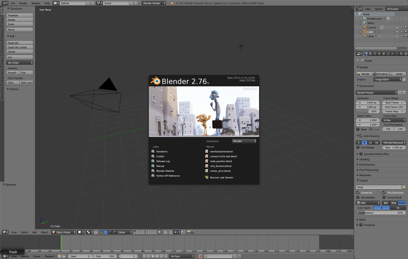

Installing and Updating¶
Table of Contents
Installation¶
There are two versions of the Blend4Web framework: Blend4Web SDK and Blend4Web Add-On. In order to decide which one best suits your needs, you will need to decide which kinds of applications you are planning on developing.
If you plan on using all features that Blend4Web engine has to offer, you should install Blend4Web SDK.
If your intention is to develop small-scale projects, or if you are planning on using only a limited number of features of the Blend4Web engine (the normal editor, for example), you might consider installing the Blend4Web Add-On instead.
Note, the Add-On can only export scenes to HTML format and has limited functionality. For example, it does not include the project manager, example scenes, user manual and other additional resources. However, it still has everything you might need to create a simple application.
Installing Blender¶
Authoring 3D scenes is carried out directly in Blender which is open source software and is distributed free of charge.
Before installation, please download and install the compatible Blender version, according to this table.
A current stable version of Blender should be used. It can be downloaded from the official site or from Blend4Web site.
{kind=link}
Installing Blend4Web SDK¶
Stable versions of the distribution are available as an archive (blend4web_ce_YY_MM.zip – free SDK, blend4web_pro_YY_MM.zip – commercial SDK). Simply unpack this archive somewhere.
Run Blender.
Open the User Preferences panel
File > User Preferences....Open the
Filetab.Set the path to the SDK directory in the
Scriptsfield.Click the
Save User Settingsbutton.Restart Blender.
Once again, open the User Preferences panel
File > User Preferences....Open the
Add-onstab.Enable the Blend4Web add-on.
Once again, click the
Save User Settingsbutton.
{kind=link}
{kind=link}
To verify it worked:
In the File > Export menu, the Blend4Web (.json) and Blend4Web (.html) options should appear.
Installing Blend4Web Add-On¶

It can be installed the same way as any other Blender addon.
- Run Blender.
- Open the User Preferences panel
File > User Preferences.... - Open the
Add-onstab. - Press the
Install From File...button. - Select the archive containing Blend4Web add-on and press
Install From File...button. - Press the
Save User Settingsbutton. - Restart Blender.
- Once again, open the User Preferences panel
File > User Preferences.... - Open the
Add-onstab. - Find the Blend4Web Add-on in the list.
- Check the box on the left side of its title to enable it.
- Press the
Save User Settingsbutton once again.
Now, everything should work properly.
Switching to Blend4Web Mode¶
To reveal the engine settings, select Blend4Web from the upper panel menu:

Updating¶
Updating the SDK¶
Before updating, we recommend to backup all projects in development using the project export tools.
To update the SDK, follow these steps:
Download the new version of the SDK.
Run Blender.
Open the
User Preferenceswindow.Open the
Add-onspanel.Disable
Blend4WebAdd-on.Note
We recommend not to use the
Removebutton to disable the Add-on for updating the SDK, as doing so will completely delete the add-on, including its files in the SDK.Unpack the new version of the SDK from the archive.
Note
There are two methods to do this.
Firstly, you can completely delete the SDK folder and, after that, extract the new version folder, as if you were installing the SDK for the first time.
Secondly, you can simply overwrite the outdated SDK files with the new ones. This method is considered less “pure”, but in most cases it should not cause any problems.
Open the
Filepanel in theUser Preferenceswindow.Set the path to the SDK folder in the
Scriptsfield.Press the
Save User Settingsbutton.Restart Blender.
Open the
User Preferenceswindow once again.Open the
Add-onspanel.Enable
Blend4Webadd-on.Press the
Save User Settingsbutton once again.Check if everything works correctly.
After updating is complete, you can import all saved projects using the project import tools.
Updating the Addon¶
If you are only using the Blend4Web add-on, follow this instruction instead.
Before installing a new version of the add-on, you may firstly remove the existing one. To do this, unfold the information tab of the Blend4Web addon and press the Remove button. Removing the old version is not required before installing a new one, but doing so makes sure there won’t be any conflicts.
{kind=link}
- Download the archive that contains the new version of the add-on, and save it to any place on your hard drive.
- Run Blender.
- Open the
User Preferenceswindow. - Switch to the
Add-onspanel. - Install the new version of the add-on from the archive you downloaded.
- Press the
Save User Settings button. - Restart Blender.
Everything should be working now.
Updating Saved Projects¶
After you have updated your SDK (or Add-on), you can import projects that you exported before updating back to the Project Manager. To do this, follow the following instructions:
- Open Project Manager.
- Import your projects using the
Import Project(s)button. - Reexport the projects’
.blendfiles using there-export sceneslink. - Use the
check moduleslink for every imported project to make sure there are no missing or unused modules in the program code. If there are, you may try to fix the problems using theUpdate Modulesbutton. - Then use
buildcommand to make the build versions of the imported projects work again. - The developer version of the projects using
CopyorCompileengine binding type should also be build to properly work with the new version of the SDK (the developer versions of the projects with other binding types should work fine without it).